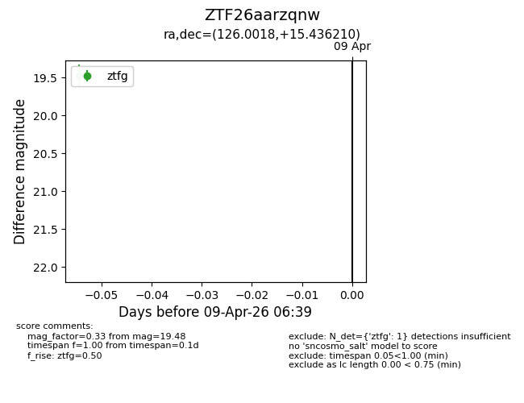
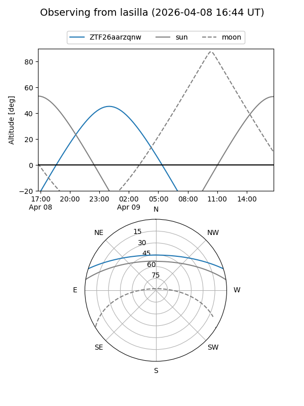
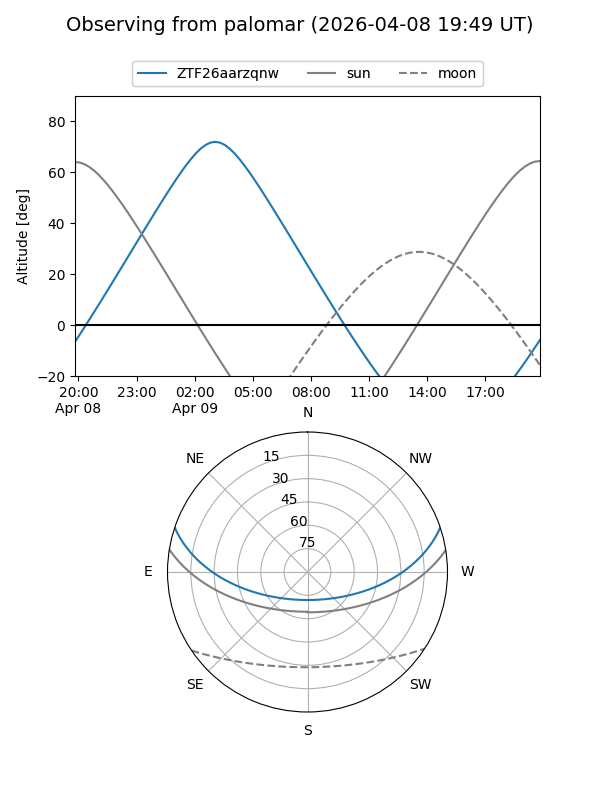

ZTF26aarzqnw
Target ZTF26aarzqnw at 2026-04-09 06:43
Aliases and brokers:
FINK: link
Lasair: link
ALeRCE: link
alt names
ZTF26aarzqnw (ztf,fink_ztf)
Coordinates:
equatorial (ra, dec) = 126.0018,+15.43621
equatorial (HMS+DMS) = 08:24:00.44,+15:26:10.36
galactic (l, b) = (208.7931,+27.29229)
Flags:
Photometry:
last ztfg=19.48
1 ztfg detections
Lightcurve

Visibility


Additional plots